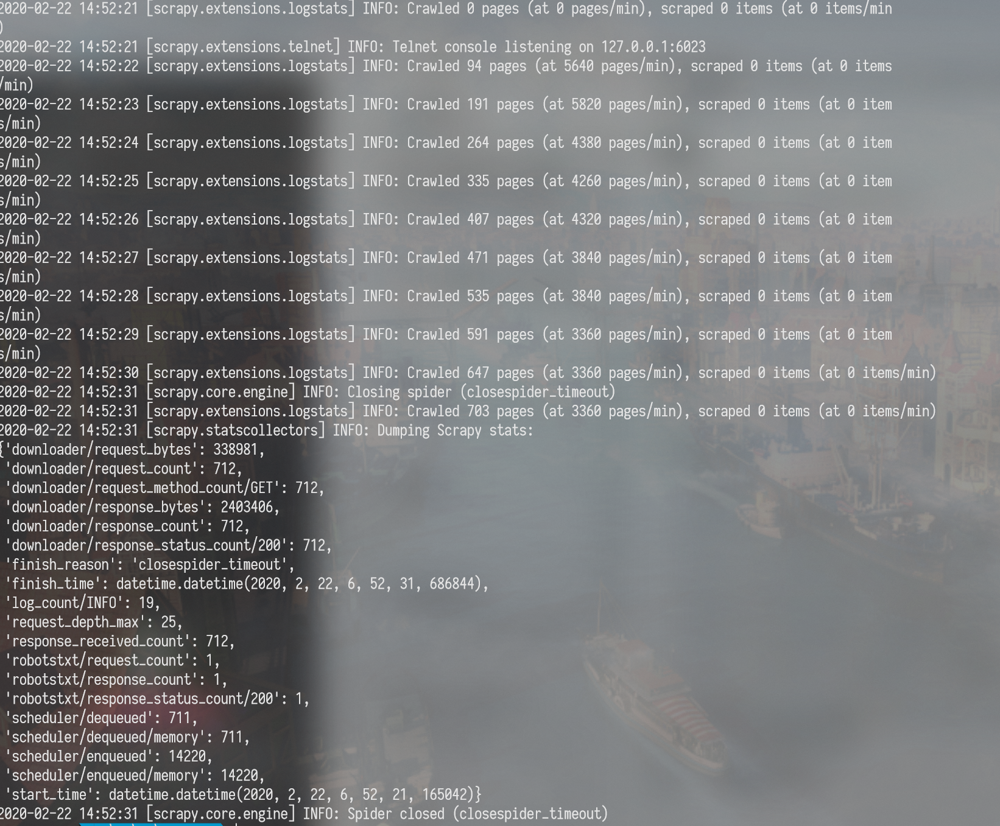
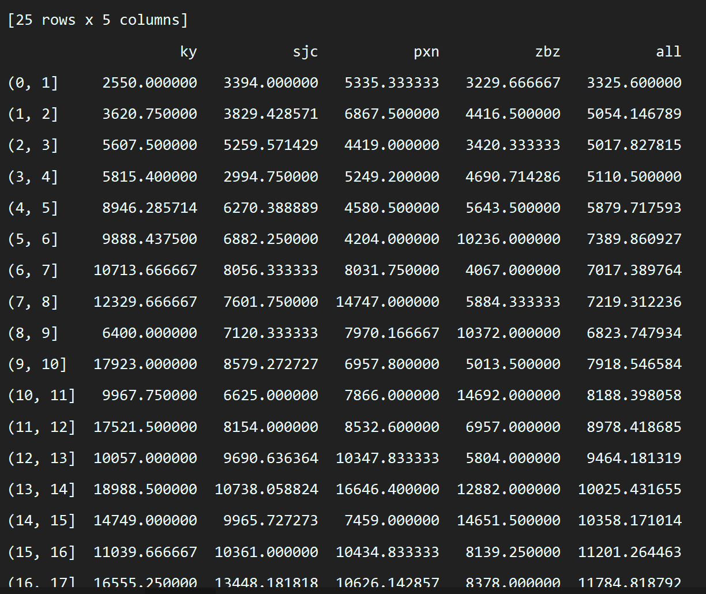
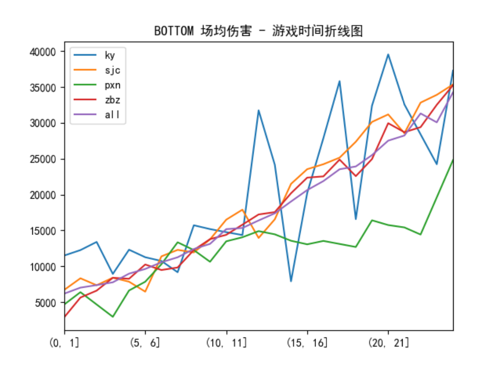

我并不太喜欢照抄官方文档式的文章,所以下面的内容都只是抛砖引玉,善于使用搜索引擎与官方文档.
爬虫
requests
python自带了一个urllib,但是并不好用,requests就是urllib的二次封装,更加人性化与方便.
缺点就是requests是阻塞式的库,如果有高并发的需求,需要
requests库比较常用,各位应该都会用.
最常用的用法就是:
1 | # 发送GET请求 |
当然还可以定制各种参数
比较常用的
1 | data= 设置post body |
总得来说,requests能满足大多数情况下的基本需求,但是性能需要开发者去折腾.
因此,如果是写扫描器或爬虫之类的工具,requests并不是很好的选择.
scrapy
如果是开发扫描器或者爬虫,推荐使用python的scrapy.
scrapy最初设计是爬虫开发框架,但扫描器和爬虫原理其实一模一样,开发扫描器也未尝不可.
安装
我使用的是anaconda来管理python.
conda install scrapy
就完事了,如果是python官方则需要安装win32api之类的库,所以推荐使用anaconda.
使用
安装完了运行scrapy bench验证是否安装成功,顺便测试下速度.

我这台电脑与网络环境最快可以达到3360个页面每分钟,当然还取决于页面返回内容的大小.这比自己搞高并发简单多了.
各种详细参数与使用还请看官方文档,这里只简述最基本的概念.
以爬取英雄联盟的对战数据为例,这并不是个很好的例子,因为lol的数据是通过api返回的json数据,而不是标准的html,这里是为了和后面的数据分析统一.
如果要从html中筛选数据,可以看看官方教程.我个人认为xpath的方式比beautifulsoup之类的方式方便很多.chrome浏览器上有个xpath helper插件,可以帮你快速测试xpath是否正确.
运行scrapy startproject loldata新建项目,会生成以下文件
scrapy.cfg: 项目的配置文件loldata/items.py: 项目中的item文件,定义需要爬取的内容.loldata/spiders/: 放置spider代码的目录.loldata/settings.py: scrapy的设置文件.loldata/middlewares.py:spider的下载中间件,用来处理爬虫的请求和响应,假如需要定制代理池,随机UA头,cookies池,验证码处理之类的功能,可以在这里添加.loldata/pipelines.py: spider获取的指定数据在返回时,会先经过pipelines,如果有入库之类的操作,可以在这里进行.
接下来创建一个spider,运行scrapy genspider spidername "https://lol.qq.com/"
(这个url可以随便填,用来防止爬虫爬到其他网站的,可以在代码中修改或删除.)
会创建一个spider文件,内容如下:
1 | # -*- coding: utf-8 -*- |
在这里,可以定制一个spider去实现爬虫或扫描器的功能.以lol对战数据为例.
lol的对战数据需要登录后才能访问,也就是需要设置Cookies.
而且该数据是以api的形式获取的json数据,就用不到scrapy自带的强大的xpath解析html的功能了,只需要把json数据全部拿到然后入库保存即可.
1 | # -*- coding: utf-8 -*- |
scrapy引擎会先从start_urls开始,如果start_urls是一个list,那么会一个一个爬.
如果重写start_requests方法,那么所有start_urls会先经过start_requests处理.为的就是带上cookie请求.当然,如果在setting.py中设置cookie,就不需要在每个Request设置了.Request中的callback参数会把response送入响应的方法中进一步处理.一直到拿到你需要的数据为止.
稍微一提,如果需要在Request中传递参数,可以添加meta参数.
写好代码后,在命令行运行scrapy crawl gamejsonspider,爬虫就开始了,完全不需要我们去考虑高并发是如何实现的,速度比纯requests库快了不知道多少倍.

本文提到的scrapy只是抛砖引玉,更多详细用法可以去搜索引擎找找.
数据分析
将数据保存到sqlite数据库后,就可以使用分析了.
数据分析主要使用以下三个库.
- numpy : 负责数据处理
- pandas : 负责数据分析
- matplotlib 生成图表
numpy
从数据库中取出的数据是一个大的list,这个list的每个元素就是数据库查询结果的一行,而元素则是tuple,由每个字段的值构成.
就像这样:[('召唤师1','12345'),('召唤师2','32412')]
这样的数据并不方便处理,只能通过层层循环嵌套去判断,代码写起来可读性差,也很容易把自己绕晕.
可以把从数据库中取出的数据转化成numpy中带的数据结构array(矩阵),再使用numpy中的函数处理,代码可读性会高很多,逻辑也清晰明了.
numpy的具体使用网上一搜文章一堆.多找几篇参考对比下尝试一下,很快就能学会基本的用法.
pandas
使用numpy处理完的数据,再使用pandas生成数据表.就像这样:

pandas有两个基本对象,Series和DataFrame,上面的图就是DataFrame,而Series类似带索引的list.
pandas的画图功能是基于matplotlib,只是pycharm只支持matplotlib的预览.
pandas支持柱状图,散点图,直方图等等等等,稍微浏览下官方文档,很容易上手.
推荐阅读十分钟上手pandas

pandas爬虫
(补充)
我原本以为pandas是数据分析的工具,突然发现pandas也可以用来写爬虫,在特定用途是,甚至用的比scrapy更加舒服.
pandas中有从各种数据源取数据的函数.例如read_excel(),read_csv(),read_html()等等.
这个read_html()非常神奇,把我惊到了.
read_html()会将html页面中table标签中的数据转化为DataFrame类型
用法:
1 | import pandas as pd |
就这么简单,数据就拿到了.所以当在爬一些数据在table中的网页时,简直是神器.远比任何其他爬虫都方便百倍.
python黑魔法
当开始尝试使用python进行数据分析,发现有些需求如果使用分支循环语句会导致三四层甚至更多层的嵌套.虽然嵌套可以封装成函数,但是这样调用链又会变得复杂,牵一发而动全身.
这时候,想起来之前学过的一些python的高级特性.使用这些高级特性可以让代码变得简洁易读.
建议阅读python 高级特性 —- 廖雪峰,下面我只做简单介绍.
熟练的使用这些特性可以帮助你写出更加pythonic的代码(虽然我自己写的代码也丑).
迭代器与生成器
可用for循环的对象都是可迭代对象,但是需要注意可迭代对象不一定是迭代器.
list,string,dict之类的都是可迭代对象,但不是迭代器.
因为迭代器设计之初是用来惰性保存可迭代对象的,比如全体自然数.任何计算机都不可能保存下全体自然数,而迭代器就是一个不断生成下一个自然数的工具.因此list这种直接将值保存在内存中的对象不是迭代器.
迭代器本质上是一个数据流,可以不断调用next()函数返回下一个值.
生成器本质是用来返回迭代器的函数.
看一个生成器的例子
1 | def gen(n): |
map 和reduce
google的一位大佬是map和reduce的传教士,使用者两个特性确实可以写出更简洁的代码.论文:MapReduce: Simplified Data Processing on Large Clusters
引用廖雪峰对map的描述:
map()函数接收两个参数，一个是函数，一个是Iterable，map将传入的函数依次作用到序列的每个元素，并把结果作为新的Iterator返回
直接看例子:
1 | def add1(x): |
list里的每个元素都加了1,这就免去了写一个for循环.
reduce也差不多,但是它会将第一次的返回值传入到下一次函数的输入中,类似:
1 | reduce(f, [x1, x2, x3, x4]) = f(f(f(x1, x2), x3), x4) |
类似的高阶函数还有filter和sorted分别用来生成过滤与排序的函数.用法也类似,详情可看官方文档.
lambda(匿名函数)
假如我需要使用刚才的给数组中所有元素加一,这样需要重新定义一个函数,但是为了这么简单的功能重新定义函数牺牲了代码的简洁.
onelinerpython.
所以这时候就需要用到了lambda.
把刚才的那个功能改写成lambda形式的:
1 | l = [1,2,3,4,5] |
工厂函数
python支持在函数中定义函数.
比如:
1 | def addx(x): |
我在这之前特意不提”闭包”二字,是不希望让这两个没有明确中文语义的混淆了概念.实际上,工厂函数返回的时候还会将上层函数中的变量一同返回.
例如
1 | def addx(x): |
当工厂函数生成了一个函数对象,这个函数对象中依旧能访问有上层函数中的变量.这个特性就叫做闭包.
例子中的变量是example.
装饰器
当一个工厂函数传入值是函数,返回值也是函数时,那么这个工厂函数就可以叫做装饰器.
而python的开发者将这种用法包装成了语法糖,让代码更加优雅与易读.
python用了@来表示装饰器语法,用廖雪峰老师的例子.
1 | def log(func): |
可以看到,@语法只是将工厂函数简写了而已,这种简化我们将其叫做”装饰器”.
小结
python的这些黑魔法并不是python独有的,这些概念大多属于函数式编程,在php,java这些现代的语言中,同样可以找到类似的语法.
我一圈用下来,认为python是最舒服的.在python中掌握了这些概念,换一种语言也就是熟悉下语法的事情.